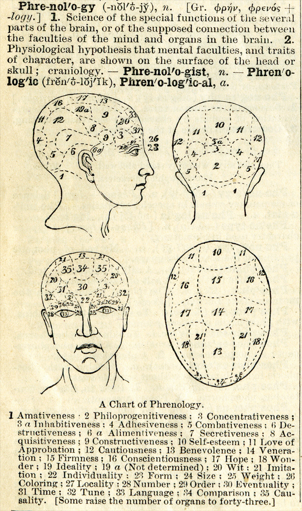
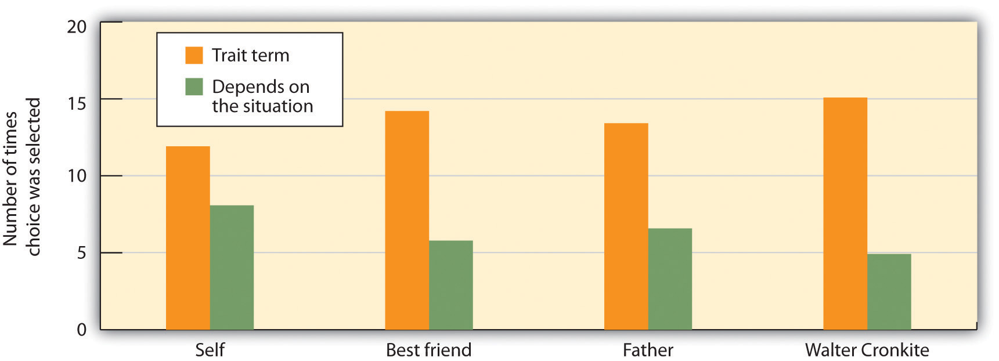
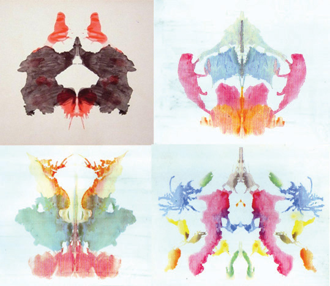
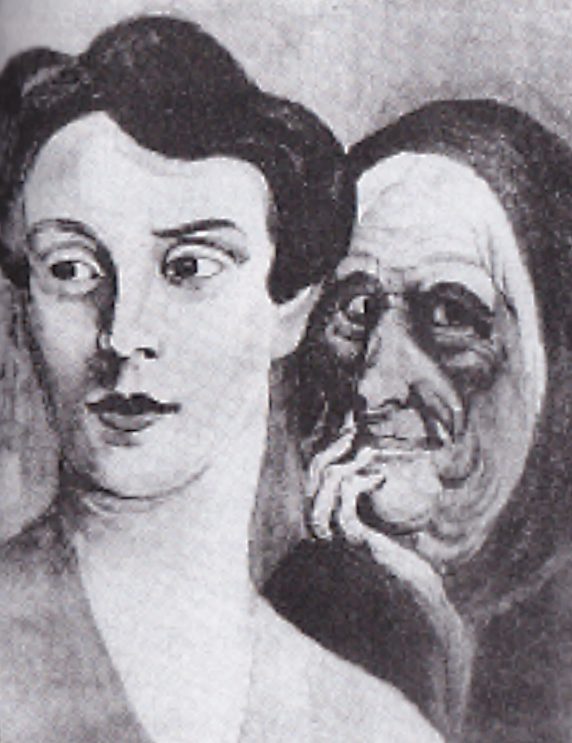

Early theories assumed that personality was expressed in people’s physical appearance. One early approach, developed by the German physician Franz Joseph Gall (1758–1828) and known as phrenology, was based on the idea that we could measure personality by assessing the patterns of bumps on people’s skulls (Figure 11.1 "Phrenology"). In the Victorian age, phrenology was taken seriously and many people promoted its use as a source of psychological insight and self-knowledge. Machines were even developed for helping people analyze skulls (Simpson, 2005).Simpson, D. (2005). Phrenology and the neurosciences: Contributions of F. J. Gall and J. G. Spurzheim. ANZ Journal of Surgery, 75(6), 475–482. However, because careful scientific research did not validate the predictions of the theory, phrenology has now been discredited in contemporary psychology.
Figure 11.1 Phrenology
This definition of phrenology with a chart of the skull appeared in Webster’s Academic Dictionary, circa 1895.
Source: Photo courtesy of Webster’s Academic Dictionary, http://en.wikipedia.org/wiki/File:1895-Dictionary-Phrenolog.png.
Another approach, known as somatology, championed by the psychologist William Herbert Sheldon (1898–1977), was based on the idea that we could determine personality from people’s body types (Figure 11.2 "Sheldon’s Body Types"). Sheldon (1940)Sheldon, W. (1940). The varieties of human physique: An introduction to constitutional psychology. New York, NY: Harper. argued that people with more body fat and a rounder physique (“endomorphs”) were more likely to be assertive and bold, whereas thinner people (“ectomorphs”) were more likely to be introverted and intellectual. As with phrenology, scientific research did not validate the predictions of the theory, and somatology has now been discredited in contemporary psychology.
Figure 11.2 Sheldon’s Body Types

William Sheldon erroneously believed that people with different body types had different personalities.
Another approach to detecting personality is known as physiognomy, or the idea that it is possible to assess personality from facial characteristics. In contrast to phrenology and somatology, for which no research support has been found, contemporary research has found that people are able to detect some aspects of a person’s character—for instance, whether they are gay or straight and whether they are Democrats or Republicans—at above chance levels by looking only at his or her face (Rule & Ambady, 2010; Rule, Ambady, Adams, & Macrae, 2008; Rule, Ambady, & Hallett, 2009).Rule, N. O., & Ambady, N. (2010). Democrats and Republicans can be differentiated from their faces. PLoS ONE, 5(1), e8733; Rule, N. O., Ambady, N., Adams, R. B., Jr., & Macrae, C. N. (2008). Accuracy and awareness in the perception and categorization of male sexual orientation. Journal of Personality and Social Psychology, 95(5), 1019–1028; Rule, N. O., Ambady, N., & Hallett, K. C. (2009). Female sexual orientation is perceived accurately, rapidly, and automatically from the face and its features. Journal of Experimental Social Psychology, 45(6), 1245–1251.
Despite these results, the ability to detect personality from faces is not guaranteed. Olivola and Todorov (2010)Olivola, C. Y., & Todorov, A. (2010). Fooled by first impressions? Reexamining the diagnostic value of appearance-based inferences. Journal of Experimental Social Psychology, 46(2), 315–324. recently studied the ability of thousands of people to guess the personality characteristics of hundreds of thousands of faces on the website What’s My Image? (http://www.whatsmyimage.com). In contrast to the predictions of physiognomy, the researchers found that these people would have made more accurate judgments about the strangers if they had just guessed, using their expectations about what people in general are like, rather than trying to use the particular facial features of individuals to help them. It seems then that the predictions of physiognomy may also, in the end, find little empirical support.
Personalities are characterized in terms of traitsRelatively enduring characteristics that influence our behavior across many situations., which are relatively enduring characteristics that influence our behavior across many situations. Personality traits such as introversion, friendliness, conscientiousness, honesty, and helpfulness are important because they help explain consistencies in behavior.
The most popular way of measuring traits is by administering personality tests on which people self-report about their own characteristics. Psychologists have investigated hundreds of traits using the self-report approach, and this research has found many personality traits that have important implications for behavior. You can see some examples of the personality dimensions that have been studied by psychologists and their implications for behavior in Table 11.1 "Some Personality Traits That Predict Behavior", and you can try completing a trait measure at the website shown in Note 11.5 "Example of a Trait Measure".
Table 11.1 Some Personality Traits That Predict Behavior
| Trait | Description | Examples of behaviors exhibited by people who have the trait |
|---|---|---|
| Authoritarianism (Adorno, Frenkel-Brunswik, Levinson, & Sanford, 1950) | A cluster of traits including conventionalism, superstition, toughness, and exaggerated concerns with sexuality | Authoritarians are more likely to be prejudiced, to conform to leaders, and to display rigid behaviors. |
| Individualism-collectivism (Triandis, 1989) | Individualism is the tendency to focus on oneself and one’s personal goals; collectivism is the tendency to focus on one’s relations with others. | Individualists prefer to engage in behaviors that make them stand out from others, whereas collectivists prefer to engage in behaviors that emphasize their similarity to others. |
| Internal versus external locus of control (Rotter, 1966) | In comparison to those with an external locus of control, people with an internal locus of control are more likely to believe that life events are due largely to their own efforts and personal characteristics. | People with higher internal locus of control are happier, less depressed, and healthier in comparison to those with an external locus of control. |
| Need for achievement (McClelland, 1958) | The desire to make significant accomplishments by mastering skills or meeting high standards | Those high in need for achievement select tasks that are not too difficult to be sure they will succeed in them. |
| Need for cognition (Cacioppo & Petty, 1982) | The extent to which people engage in and enjoy effortful cognitive activities | People high in the need for cognition pay more attention to arguments in ads. |
| Regulatory focus (Shah, Higgins, & Friedman, 1998) | Refers to differences in the motivations that energize behavior, varying from a promotion orientation (seeking out new opportunities) to a prevention orientation (avoiding negative outcomes) | People with a promotion orientation are more motivated by goals of gaining money, whereas those with prevention orientation are more concerned about losing money. |
| Self-consciousness (Fenigstein, Sheier, & Buss, 1975) | The tendency to introspect and examine one’s inner self and feelings | People high in self-consciousness spend more time preparing their hair and makeup before they leave the house. |
| Self-esteem (Rosenberg, 1965) | High self-esteem means having a positive attitude toward oneself and one’s capabilities. | High self-esteem is associated with a variety of positive psychological and health outcomes. |
| Sensation seeking (Zuckerman, 2007) | The motivation to engage in extreme and risky behaviors | Sensation seekers are more likely to engage in risky behaviors such as extreme and risky sports, substance abuse, unsafe sex, and crime. |
Sources: Adorno, T. W., Frenkel-Brunswik, E., Levinson, D. J., & Sanford, R. N. (1950). The authoritarian personality. New York, NY: Harper; Triandis, H. (1989). The self and social behavior in differing cultural contexts. Psychological Review, 93, 506–520; Rotter, J. (1966). Generalized expectancies of internal versus external locus of control of reinforcement. Psychological Monographs, 80; McClelland, D. C. (1958). Methods of measuring human motivation. In John W. Atkinson (Ed.), Motives in fantasy, action and society. Princeton, NJ: D. Van Nostrand; Cacioppo, J. T., & Petty, R. E. (1982). The need for cognition. Journal of Personality and Social Psychology, 42, 116–131; Shah, J., Higgins, T., & Friedman, R. S. (1998). Performance incentives and means: How regulatory focus influences goal attainment. Journal of Personality and Social Psychology, 74(2), 285–293; Fenigstein, A., Scheier, M. F., & Buss, A. H. (1975). Public and private self-consciousness: Assessment and theory. Journal of Consulting and Clinical Psychology, 43, 522–527; Rosenberg, M. (1965). Society and the adolescent self-image. Princeton, NJ: Princeton University Press; Zuckerman, M. (2007). Sensation seeking and risky behavior. Washington, DC: American Psychological Association.
You can try completing a self-report measure of personality (a short form of the Five-Factor Personality Test) here. There are 120 questions and it should take you about 15–20 minutes to complete. You will receive feedback about your personality after you have finished the test.
As with intelligence tests, the utility of self-report measures of personality depends on their reliability and construct validity. Some popular measures of personality are not useful because they are unreliable or invalid. Perhaps you have heard of a personality test known as the Myers-Briggs Type Indicator (MBTI). If so, you are not alone, because the MBTI is the most widely administered personality test in the world, given millions of times a year to employees in thousands of companies. The MBTI categorizes people into one of four categories on each of four dimensions: introversion versus extraversion, sensing versus intuiting, thinking versus feeling, and judging versus perceiving.
Although completing the MBTI can be useful for helping people think about individual differences in personality, and for “breaking the ice” at meetings, the measure itself is not psychologically useful because it is not reliable or valid. People’s classifications change over time, and scores on the MBTI do not relate to other measures of personality or to behavior (Hunsley, Lee, & Wood, 2003).Hunsley, J., Lee, C. M., & Wood, J. M. (2003). Controversial and questionable assessment techniques. In S. O. Lilienfeld, S. J. Lynn, & J. M. Lohr (Eds.), Science and pseudoscience in clinical psychology (pp. 39–76). New York, NY: Guilford Press. Measures such as the MBTI remind us that it is important to scientifically and empirically test the effectiveness of personality tests by assessing their stability over time and their ability to predict behavior.
One of the challenges of the trait approach to personality is that there are so many of them; there are at least 18,000 English words that can be used to describe people (Allport & Odbert, 1936).Allport, G. W., & Odbert, H. (1936). Trait-names: A psycho-lexical study. No. 211. Princeton, NJ: Psychological Review Monographs. Thus a major goal of psychologists is to take this vast number of descriptors (many of which are very similar to each other) and to determine the underlying important or “core” traits among them (John, Angleitner, & Ostendorf, 1988).John, O. P., Angleitner, A., & Ostendorf, F. (1988). The lexical approach to personality: A historical review of trait taxonomic research. European Journal of Personality, 2(3), 171–203.
The trait approach to personality was pioneered by early psychologists, including Gordon Allport (1897–1967), Raymond Cattell (1905–1998), and Hans Eysenck (1916–1997). Each of these psychologists believed in the idea of the trait as the stable unit of personality, and each attempted to provide a list or taxonomy of the most important trait dimensions. Their approach was to provide people with a self-report measure and then to use statistical analyses to look for the underlying “factors” or “clusters” of traits, according to the frequency and the co-occurrence of traits in the respondents.
Allport (1937)Allport, G. W. (1937). Personality: A psychological interpretation. New York, NY: Holt, Rinehart, & Winston. began his work by reducing the 18,000 traits to a set of about 4,500 traitlike words that he organized into three levels according to their importance. He called them “cardinal traits” (the most important traits), “central traits” (the basic and most useful traits), and “secondary traits” (the less obvious and less consistent ones). Cattell (1990)Cattell, R. B. (1990). Advances in Cattellian personality theory. In L. A. Pervin (Ed.), Handbook of personality: Theory and research (pp. 101–110). New York, NY: Guilford Press. used a statistical procedure known as factor analysis to analyze the correlations among traits and to identify the most important ones. On the basis of his research he identified what he referred to as “source” (more important) and “surface” (less important) traits, and he developed a measure that assessed 16 dimensions of traits based on personality adjectives taken from everyday language.
Hans Eysenck was particularly interested in the biological and genetic origins of personality and made an important contribution to understanding the nature of a fundamental personality trait: extraversion versus introversion (Eysenck, 1998).Eysenck, H. (1998). Dimensions of personality. Piscataway, NJ: Transaction. Eysenck proposed that people who are extroverted (i.e., who enjoy socializing with others) have lower levels of naturally occurring arousal than do introverts (who are less likely to enjoy being with others). Eysenck argued that extroverts have a greater desire to socialize with others to increase their arousal level, which is naturally too low, whereas introverts, who have naturally high arousal, do not desire to engage in social activities because they are overly stimulating.
The fundamental work on trait dimensions conducted by Allport, Cattell, Eysenck, and many others has led to contemporary trait models, the most important and well-validated of which is the Five-Factor (Big Five) Model of PersonalityThe idea that there are five fundamental underlying trait dimensions that are stable across time, cross-culturally shared, and explain a substantial proportion of behavior.. According to this model, there are five fundamental underlying trait dimensions that are stable across time, cross-culturally shared, and explain a substantial proportion of behavior (Costa & McCrae, 1992; Goldberg, 1982).Costa, P. T., Jr., & McCrae, R. R. (1992). Revised NEO Personality Inventory (NEO-PI-R) and NEO Five-Factor Inventory (NEO-FFI) manual. Odessa, FL: Psychological Assessment Resources; Goldberg, L. R. (1982). From ace to zombie: Some explorations in the language of personality. In C. D. Spielberger & J. N. Butcher (Eds.), Advances in personality assessment (Vol. 1). Hillsdale, NJ: Lawrence Erlbaum Associates. As you can see in Table 11.2 "The Five Factors of the Five-Factor Model of Personality", the five dimensions (sometimes known as the “Big Five”) are agreeableness, conscientiousness, extraversion, neuroticism, and openness to experience. (You can remember them using the watery acronyms CANOE or OCEAN.)
Table 11.2 The Five Factors of the Five-Factor Model of Personality
| Dimension | Sample items | Description | Examples of behaviors predicted by the trait |
|---|---|---|---|
| Openness to experience | “I have a vivid imagination”; “I have a rich vocabulary”; “I have excellent ideas.” | A general appreciation for art, emotion, adventure, unusual ideas, imagination, curiosity, and variety of experience | Individuals who are highly open to experience tend to have distinctive and unconventional decorations in their home. They are also likely to have books on a wide variety of topics, a diverse music collection, and works of art on display. |
| Conscientiousness | “I am always prepared”; “I am exacting in my work”; “I follow a schedule.” | A tendency to show self-discipline, act dutifully, and aim for achievement | Individuals who are conscientious have a preference for planned rather than spontaneous behavior. |
| Extraversion | “I am the life of the party”; “I feel comfortable around people”; “I talk to a lot of different people at parties.” | The tendency to experience positive emotions and to seek out stimulation and the company of others | Extroverts enjoy being with people. In groups they like to talk, assert themselves, and draw attention to themselves. |
| Agreeableness | “I am interested in people”; “I feel others’ emotions”; “I make people feel at ease.” | A tendency to be compassionate and cooperative rather than suspicious and antagonistic toward others; reflects individual differences in general concern for social harmony | Agreeable individuals value getting along with others. They are generally considerate, friendly, generous, helpful, and willing to compromise their interests with those of others. |
| Neuroticism | “I am not usually relaxed”; “I get upset easily”; “I am easily disturbed” | The tendency to experience negative emotions, such as anger, anxiety, or depression; sometimes called “emotional instability” | Those who score high in neuroticism are more likely to interpret ordinary situations as threatening and minor frustrations as hopelessly difficult. They may have trouble thinking clearly, making decisions, and coping effectively with stress. |
A large body of research evidence has supported the five-factor model. The Big Five dimensions seem to be cross-cultural, because the same five factors have been identified in participants in China, Japan, Italy, Hungary, Turkey, and many other countries (Triandis & Suh, 2002).Triandis, H. C., & Suh, E. M. (2002). Cultural influences on personality. Annual Review of Psychology, 53(1), 133–160. The Big Five dimensions also accurately predict behavior. For instance, a pattern of high conscientiousness, low neuroticism, and high agreeableness predicts successful job performance (Tett, Jackson, & Rothstein, 1991).Tett, R. P., Jackson, D. N., & Rothstein, M. (1991). Personality measures as predictors of job performance: A meta-analytic review. Personnel Psychology, 44(4), 703–742. Scores on the Big Five dimensions also predict the performance of U.S. presidents; ratings of openness to experience are correlated positively with ratings of presidential success, whereas ratings of agreeableness are correlated negatively with success (Rubenzer, Faschingbauer, & Ones, 2000).Rubenzer, S. J., Faschingbauer, T. R., & Ones, D. S. (2000). Assessing the U.S. presidents using the revised NEO Personality Inventory. Assessment, 7(4), 403–420. The Big Five factors are also increasingly being used in helping researchers understand the dimensions of psychological disorders such as anxiety and depression (Oldham, 2010; Saulsman & Page, 2004).Oldham, J. (2010). Borderline personality disorder and DSM-5. Journal of Psychiatric Practice, 16(3), 143–154; Saulsman, L. M., & Page, A. C. (2004). The five-factor model and personality disorder empirical literature: A meta-analytic review. Clinical Psychology Review, 23, 1055–1085.
An advantage of the five-factor approach is that it is parsimonious. Rather than studying hundreds of traits, researchers can focus on only five underlying dimensions. The Big Five may also capture other dimensions that have been of interest to psychologists. For instance, the trait dimension of need for achievement relates to the Big Five variable of conscientiousness, and self-esteem relates to low neuroticism. On the other hand, the Big Five factors do not seem to capture all the important dimensions of personality. For instance, the Big Five does not capture moral behavior, although this variable is important in many theories of personality. And there is evidence that the Big Five factors are not exactly the same across all cultures (Cheung & Leung, 1998).Cheung, F. M., & Leung, K. (1998). Indigenous personality measures: Chinese examples. Journal of Cross-Cultural Psychology, 29(1), 233–248.
One challenge to the trait approach to personality is that traits may not be as stable as we think they are. When we say that Malik is friendly, we mean that Malik is friendly today and will be friendly tomorrow and even next week. And we mean that Malik is friendlier than average in all situations. But what if Malik were found to behave in a friendly way with his family members but to be unfriendly with his fellow classmates? This would clash with the idea that traits are stable across time and situation.
The psychologist Walter Mischel (1968)Mischel, W. (1968). Personality and assessment. New York, NY: John Wiley & Sons. reviewed the existing literature on traits and found that there was only a relatively low correlation (about r = .30) between the traits that a person expressed in one situation and those that they expressed in other situations. In one relevant study, Hartshorne, May, Maller, & Shuttleworth (1928)Hartshorne, H., May, M. A., Maller, J. B., Shuttleworth, F. K. (1928). Studies in the nature of character. New York, NY: Macmillan. examined the correlations among various behavioral indicators of honesty in children. They also enticed children to behave either honestly or dishonestly in different situations, for instance, by making it easy or difficult for them to steal and cheat. The correlations among children’s behavior was low, generally less than r = .30, showing that children who steal in one situation are not always the same children who steal in a different situation. And similar low correlations were found in adults on other measures, including dependency, friendliness, and conscientiousness (Bem & Allen, 1974).Bem, D. J., & Allen, A. (1974). On predicting some of the people some of the time: The search for cross-situational consistencies in behavior. Psychological Review, 81(6), 506–520.
Psychologists have proposed two possibilities for these low correlations. One possibility is that the natural tendency for people to see traits in others leads us to believe that people have stable personalities when they really do not. In short, perhaps traits are more in the heads of the people who are doing the judging than they are in the behaviors of the people being observed. The fact that people tend to use human personality traits, such as the Big Five, to judge animals in the same way that they use these traits to judge humans is consistent with this idea (Gosling, 2001).Gosling, S. D. (2001). From mice to men: What can we learn about personality from animal research? Psychological Bulletin, 127(1), 45–86. And this idea also fits with research showing that people use their knowledge representation (schemas) about people to help them interpret the world around them and that these schemas color their judgments of others’ personalities (Fiske & Taylor, 2007).Fiske, S. T., & Taylor, S. E. (2007). Social cognition, from brains to culture. New York, NY: McGraw-Hill.
Research has also shown that people tend to see more traits in other people than they do in themselves. You might be able to get a feeling for this by taking the following short quiz. First, think about a person you know—your mom, your roommate, or a classmate—and choose which of the three responses on each of the four lines best describes him or her. Then answer the questions again, but this time about yourself.
| 1. | Energetic | Relaxed | Depends on the situation |
| 2. | Skeptical | Trusting | Depends on the situation |
| 3. | Quiet | Talkative | Depends on the situation |
| 4. | Intense | Calm | Depends on the situation |
Richard Nisbett and his colleagues (Nisbett, Caputo, Legant, & Marecek, 1973)Nisbett, R. E., Caputo, C., Legant, P., & Marecek, J. (1973). Behavior as seen by the actor and as seen by the observer. Journal of Personality and Social Psychology, 27(2), 154–164. had college students complete this same task for themselves, for their best friend, for their father, and for the (at the time well-known) newscaster Walter Cronkite. As you can see in Figure 11.3 "We Tend to Overestimate the Traits of Others.", the participants chose one of the two trait terms more often for other people than they did for themselves, and chose “depends on the situation” more frequently for themselves than they did for the other people. These results also suggest that people may perceive more consistent traits in others than they should.
Figure 11.3 We Tend to Overestimate the Traits of Others.
Nisbett, Caputo, Legant, and Marecek (1973) found that participants checked off a trait term (such as “energetic” or “talkative”) rather than “depends on the situation” less often when asked to describe themselves than when asked to describe others.
Source: Adapted from Nisbett, R. E., Caputo, C., Legant, P., & Marecek, J. (1973). Behavior as seen by the actor and as seen by the observer. Journal of Personality and Social Psychology, 27(2), 154–164.
The human tendency to perceive traits is so strong that it is very easy to convince people that trait descriptions of themselves are accurate. Imagine that you had completed a personality test and the psychologist administering the measure gave you this description of your personality:
You have a great need for other people to like and admire you. You have a tendency to be critical of yourself. You have a great deal of unused capacity, which you have not turned to your advantage. While you have some personality weaknesses, you are generally able to compensate for them. Disciplined and self-controlled outside, you tend to be worrisome and insecure inside. At times you have serious doubts as to whether you have made the right decision or done the right thing.
I would imagine that you might find that it described you. You probably do criticize yourself at least sometimes, and you probably do sometimes worry about things. The problem is that you would most likely have found some truth in a personality description that was the opposite. Could this description fit you too?
You frequently stand up for your own opinions even if it means that others may judge you negatively. You have a tendency to find the positives in your own behavior. You work to the fullest extent of your capabilities. You have few personality weaknesses, but some may show up under stress. You sometimes confide in others that you are concerned or worried, but inside you maintain discipline and self-control. You generally believe that you have made the right decision and done the right thing.
The Barnum effectThe observation that people tend to believe in descriptions of their personality that supposedly are descriptive of them but could in fact describe almost anyone. refers to the observation that people tend to believe in descriptions of their personality that supposedly are descriptive of them but could in fact describe almost anyone. The Barnum effect helps us understand why many people believe in astrology, horoscopes, fortune-telling, palm reading, tarot card reading, and even some personality tests. People are likely to accept descriptions of their personality if they think that they have been written for them, even though they cannot distinguish their own tarot card or horoscope readings from those of others at better than chance levels (Hines, 2003).Hines, T. (2003). Pseudoscience and the paranormal (2nd ed.). Amherst, NY: Prometheus Books. Again, people seem to believe in traits more than they should.
A second way that psychologists responded to Mischel’s findings was by searching even more carefully for the existence of traits. One insight was that the relationship between a trait and a behavior is less than perfect because people can express their traits in different ways (Mischel & Shoda, 2008).Mischel, W., & Shoda, Y. (2008). Toward a unified theory of personality: Integrating dispositions and processing dynamics within the cognitive-affective processing system. In O. P. John, R. W. Robins, & L. A. Pervin (Eds.), Handbook of personality psychology: Theory and research (3rd ed., pp. 208–241). New York, NY: Guilford Press. People high in extraversion, for instance, may become teachers, salesmen, actors, or even criminals. Although the behaviors are very different, they nevertheless all fit with the meaning of the underlying trait.
Psychologists also found that, because people do behave differently in different situations, personality will only predict behavior when the behaviors are aggregated or averaged across different situations. We might not be able to use the personality trait of openness to experience to determine what Saul will do on Friday night, but we can use it to predict what he will do over the next year in a variety of situations. When many measurements of behavior are combined, there is much clearer evidence for the stability of traits and for the effects of traits on behavior (Roberts & DelVecchio, 2000; Srivastava, John, Gosling, & Potter, 2003).Roberts, B. W., & DelVecchio, W. F. (2000). The rank-order consistency of personality traits from childhood to old age: A quantitative review of longitudinal studies. Psychological Bulletin, 126(1), 3–25; Srivastava, S., John, O. P., Gosling, S. D., & Potter, J. (2003). Development of personality in early and middle adulthood: Set like plaster or persistent change? Journal of Personality and Social Psychology, 84(5), 1041–1053.
Taken together, these findings make a very important point about personality, which is that it not only comes from inside us but is also shaped by the situations that we are exposed to. Personality is derived from our interactions with and observations of others, from our interpretations of those interactions and observations, and from our choices of which social situations we prefer to enter or avoid (Bandura, 1986).Bandura, A. (1986). Social foundations of thought and action: A social cognitive theory. Englewood Cliffs, NJ: Prentice Hall. In fact, behaviorists such as B. F. Skinner explain personality entirely in terms of the environmental influences that the person has experienced. Because we are profoundly influenced by the situations that we are exposed to, our behavior does change from situation to situation, making personality less stable than we might expect. And yet personality does matter—we can, in many cases, use personality measures to predict behavior across situations.
One of the most important measures of personality (which is used primarily to assess deviations from a “normal” or “average” personality) is the Minnesota Multiphasic Personality Inventory (MMPI)A test used around the world to identify personality and psychological disorders., a test used around the world to identify personality and psychological disorders (Tellegen et al., 2003).Tellegen, A., Ben-Porath, Y. S., McNulty, J. L., Arbisi, P. A., Graham, J. R., & Kaemmer, B. (2003). The MMPI-2 Restructured Clinical Scales: Development, validation, and interpretation. Minneapolis: University of Minnesota Press. The MMPI was developed by creating a list of more than 1,000 true-false questions and choosing those that best differentiated patients with different psychological disorders from other people. The current version (the MMPI-2) has more than 500 questions, and the items can be combined into a large number of different subscales. Some of the most important of these are shown in Table 11.3 "Some of the Major Subscales of the MMPI", but there are also scales that represent family problems, work attitudes, and many other dimensions. The MMPI also has questions that are designed to detect the tendency of the respondents to lie, fake, or simply not answer the questions.
Table 11.3 Some of the Major Subscales of the MMPI
| Abbreviation | Description | What is measured | No. of items |
|---|---|---|---|
| Hs | Hypochondriasis | Concern with bodily symptoms | 32 |
| D | Depression | Depressive symptoms | 57 |
| Hy | Hysteria | Awareness of problems and vulnerabilities | 60 |
| Pd | Psychopathic deviate | Conflict, struggle, anger, respect for society’s rules | 50 |
| MF | Masculinity/femininity | Stereotypical masculine or feminine interests/behaviors | 56 |
| Pa | Paranoia | Level of trust, suspiciousness, sensitivity | 40 |
| Pt | Psychasthenia | Worry, anxiety, tension, doubts, obsessiveness | 48 |
| Sc | Schizophrenia | Odd thinking and social alienation | 78 |
| Ma | Hypomania | Level of excitability | 46 |
| Si | Social introversion | People orientation | 69 |
To interpret the results, the clinician looks at the pattern of responses across the different subscales and makes a diagnosis about the potential psychological problems facing the patient. Although clinicians prefer to interpret the patterns themselves, a variety of research has demonstrated that computers can often interpret the results as well as can clinicians (Garb, 1998; Karon, 2000).Garb, H. N. (1998). Computers and judgment. In H. N. Garb (Ed.), Studying the clinician: Judgment research and psychological assessment (pp. 207–229). Washington, DC: American Psychological Association; Karon, B. P. (2000). The clinical interpretation of the Thematic Apperception Test, Rorschach, and other clinical data: A reexamination of statistical versus clinical prediction. Professional Psychology: Research and Practice, 31(2), 230–233. Extensive research has found that the MMPI-2 can accurately predict which of many different psychological disorders a person suffers from (Graham, 2006).Graham, J. R. (2006). MMPI-2: Assessing personality and psychopathology (4th ed.). New York, NY: Oxford University Press.
One potential problem with a measure like the MMPI is that it asks people to consciously report on their inner experiences. But much of our personality is determined by unconscious processes of which we are only vaguely or not at all aware. Projective measuresA measure of personality in which unstructured stimuli, such as inkblots, drawings of social situations, or incomplete sentences, are shown to participants, who are asked to freely list what comes to mind as they think about the stimuli. are measures of personality in which unstructured stimuli, such as inkblots, drawings of social situations, or incomplete sentences, are shown to participants, who are asked to freely list what comes to mind as they think about the stimuli. Experts then score the responses for clues to personality. The proposed advantage of these tests is that they are more indirect—they allow the respondent to freely express whatever comes to mind, including perhaps the contents of their unconscious experiences.
One commonly used projective test is the Rorschach Inkblot Test, developed by the Swiss psychiatrist Hermann Rorschach (1884–1922). The Rorschach Inkblot TestA projective measure of personality in which the respondent indicates his or her thoughts about a series of 10 symmetrical inkblots. is a projective measure of personality in which the respondent indicates his or her thoughts about a series of 10 symmetrical inkblots (Figure 11.5 "Rorschach Inkblots"). The Rorschach is administered millions of time every year. The participants are asked to respond to the inkblots, and their responses are systematically scored in terms of what, where, and why they saw what they saw. For example, people who focus on the details of the inkblots may have obsessive-compulsive tendencies, whereas those who talk about sex or aggression may have sexual or aggressive problems.
Figure 11.5 Rorschach Inkblots
The Rorschach Inkblot Test is a projective test designed to assess psychological disorders.
Another frequently administered projective test is the Thematic Apperception Test (TAT), developed by the psychologist Henry Murray (1893–1988). The Thematic Apperception Test (TAT)A projective measure of personality in which the respondent is asked to create stories about sketches of ambiguous situations, most of them of people, either alone or with others. is a projective measure of personality in which the respondent is asked to create stories about sketches of ambiguous situations, most of them of people, either alone or with others (Figure 11.6 "Sample Card From the TAT"). The sketches are shown to individuals, who are asked to tell a story about what is happening in the picture. The TAT assumes that people may be unwilling or unable to admit their true feelings when asked directly but that these feelings will show up in the stories about the pictures. Trained coders read the stories and use them to develop a personality profile of the respondent.
Figure 11.6 Sample Card From the TAT
This is one of the cards from the TAT. Note that the sex of the figure in the foreground is ambiguous as is the emotional expression of the woman in the background.
Other popular projective tests include those that ask the respondent to draw pictures, such as the Draw-A-Person test (Machover, 1949),Machover, K. (1949). Personality projection in the drawing of the human figure (A method of personality investigation). In K. Machover (Ed.), Personality projection in the drawing of the human figure: A method of personality investigation (pp. 3–32). Springfield, IL: Charles C. Thomas. and free association tests in which the respondent quickly responds with the first word that comes to mind when the examiner says a test word. Another approach is the use of “anatomically correct” dolls that feature representations of the male and female genitals. Investigators allow children to play with the dolls and then try to determine on the basis of the play if the children may have been sexually abused.
The advantage of projective tests is that they are less direct, allowing people to avoid using their defense mechanisms and therefore show their “true” personality. The idea is that when people view ambiguous stimuli they will describe them according to the aspects of personality that are most important to them, and therefore bypass some of the limitations of more conscious responding.
Despite their widespread use, however, the empirical evidence supporting the use of projective tests is mixed (Karon, 2000; Wood, Nezworski, Lilienfeld, & Garb, 2003).Karon, B. P. (2000). The clinical interpretation of the Thematic Apperception Test, Rorschach, and other clinical data: A reexamination of statistical versus clinical prediction. Professional Psychology: Research and Practice, 31(2), 230–233; Wood, J. M., Nezworski, M. T., Lilienfeld, S. O., & Garb, H. N. (2003). What’s wrong with the Rorschach? Science confronts the controversial inkblot test. San Francisco, CA: Jossey-Bass. The reliability of the measures is low because people often produce very different responses on different occasions. The construct validity of the measures is also suspect because there are very few consistent associations between Rorschach scores or TAT scores and most personality traits. The projective tests often fail to distinguish between people with psychological disorders and those without or to correlate with other measures of personality or with behavior.
In sum, projective tests are more useful as icebreakers to get to know a person better, to make the person feel comfortable, and to get some ideas about topics that may be of importance to that person than for accurately diagnosing personality.
One trait that has been studied in thousands of studies is leadershipThe ability to direct or inspire others to achieve goals., the ability to direct or inspire others to achieve goals. Trait theories of leadership are theories based on the idea that some people are simply “natural leaders” because they possess personality characteristics that make them effective (Zaccaro, 2007).Zaccaro, S. J. (2007). Trait-based perspectives of leadership. American Psychologist, 62(1), 6–16. Consider Bill Gates, the founder of the Microsoft Corporation, shown in Figure 11.7 "Varieties of Leaders". What characteristics do you think he possessed that allowed him to create such a strong company, even though many similar companies failed?
Figure 11.7 Varieties of Leaders
Which personality traits do you think characterize these leaders?
Sources: Jackson portrait courtesy of Thomas Sully, http://commons.wikimedia.org/wiki/File:Andrew_Jackson.jpg. Roosevelt photo courtesy of the U.S. Library of Congress, http://commons.wikimedia.org/wiki/File:Franklin_Delano_Roosevelt_in_1933.jpg. Kennedy photo courtesy of the U.S. Navy, http://commons.wikimedia.org/wiki/File:John_F._Kennedy.jpg. Obama photo courtesy of James O’Malley, http://commons.wikimedia.org/wiki/File:Barack_Obama_Fold.jpg. Bloomberg photo courtesy of the U.S. Army, http://commons.wikimedia.org/wiki/File:Michael_Bloomberg_speech.jpg. Jobs photo courtesy of Matt Buchanan, http://commons.wikimedia.org/wiki/File:Steve_Jobs_with_the_Apple_iPad_no_logo.jpg.
Research has found that being intelligent is an important characteristic of leaders, as long as the leader communicates to others in a way that is easily understood by his or her followers (Simonton, 1994, 1995).Simonton, D. K. (1994). Greatness: Who makes history and why. New York, NY: Guilford Press; Simonton, D. K. (1995). Personality and intellectual predictors of leadership. In D. H. Saklofske & M. Zeidner (Eds.), International handbook of personality and intelligence. Perspectives on individual differences (pp. 739–757). New York, NY: Plenum. Other research has found that people with good social skills, such as the ability to accurately perceive the needs and goals of the group members and to communicate with others, also tend to make good leaders (Kenny & Zaccaro, 1983).Kenny, D. A., & Zaccaro, S. J. (1983). An estimate of variance due to traits in leadership. Journal of Applied Psychology, 68(4), 678–685.
Because so many characteristics seem to be related to leader skills, some researchers have attempted to account for leadership not in terms of individual traits, but rather in terms of a package of traits that successful leaders seem to have. Some have considered this in terms of charisma (Sternberg & Lubart, 1995; Sternberg, 2002).Sternberg, R., & Lubart, T. (1995). Defying the crowd: Cultivating creativity in a culture of conformity. New York, NY: Free Press; Sternberg, R. J. (2002). Successful intelligence: A new approach to leadership. In R. E. Riggio, S. E. Murphy, & F. J. Pirozzolo (Eds.), Multiple intelligences and leadership (pp. 9–28). Mahwah, NJ: Lawrence Erlbaum Associates. Charismatic leadersLeaders who are enthusiastic, committed, and self-confident; who tend to talk about the importance of group goals at a broad level; and who make personal sacrifices for the group. are leaders who are enthusiastic, committed, and self-confident; who tend to talk about the importance of group goals at a broad level; and who make personal sacrifices for the group. Charismatic leaders express views that support and validate existing group norms but that also contain a vision of what the group could or should be. Charismatic leaders use their referent power to motivate, uplift, and inspire others. And research has found a positive relationship between a leader’s charisma and effective leadership performance (Simonton, 1988).Simonton, D. K. (1988). Presidential style: Personality, biography and performance. Journal of Personality and Social Psychology, 55, 928–936.
Another trait-based approach to leadership is based on the idea that leaders take either transactional or transformational leadership styles with their subordinates (Bass, 1999; Pieterse, Van Knippenberg, Schippers, & Stam, 2010).Bass, B. M. (1999). Current developments in transformational leadership: Research and applications. Psychologist-Manager Journal, 3(1), 5–21; Pieterse, A. N., Van Knippenberg, D., Schippers, M., & Stam, D. (2010). Transformational and transactional leadership and innovative behavior: The moderating role of psychological empowerment. Journal of Organizational Behavior, 31(4), 609–623. Transactional leaders are the more regular leaders, who work with their subordinates to help them understand what is required of them and to get the job done. Transformational leaders, on the other hand, are more like charismatic leaders—they have a vision of where the group is going, and attempt to stimulate and inspire their workers to move beyond their present status and to create a new and better future.
Despite the fact that there appear to be at least some personality traits that relate to leadership ability, the most important approaches to understanding leadership take into consideration both the personality characteristics of the leader as well as the situation in which the leader is operating. In some cases the situation itself is important. For instance, you might remember that President George W. Bush’s ratings as a leader increased dramatically after the September 11, 2001, terrorist attacks on the World Trade Center. This is a classic example of how a situation can influence the perceptions of a leader’s skill.
In still other cases, different types of leaders may perform differently in different situations. Leaders whose personalities lead them to be more focused on fostering harmonious social relationships among the members of the group, for instance, are particularly effective in situations in which the group is already functioning well and yet it is important to keep the group members engaged in the task and committed to the group outcomes. Leaders who are more task-oriented and directive, on the other hand, are more effective when the group is not functioning well and needs a firm hand to guide it (Ayman, Chemers, & Fiedler, 1995).Ayman, R., Chemers, M. M., & Fiedler, F. (1995). The contingency model of leadership effectiveness: Its level of analysis. The Leadership Quarterly, 6(2), 147–167.